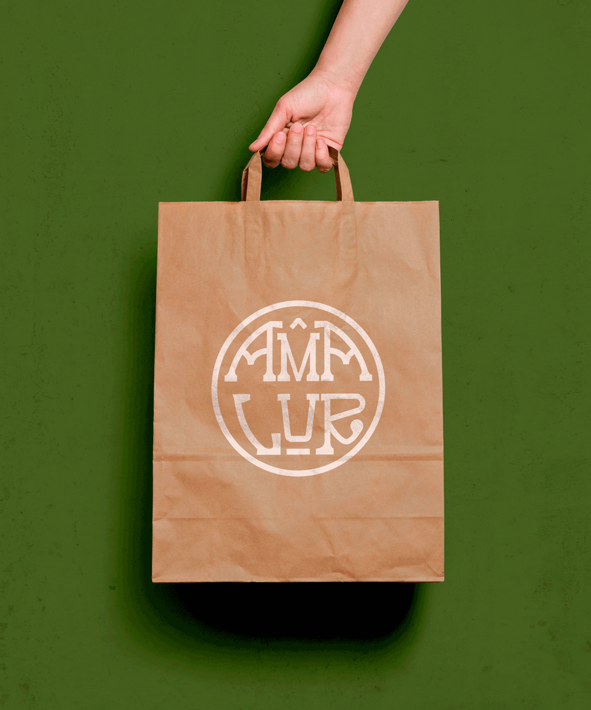
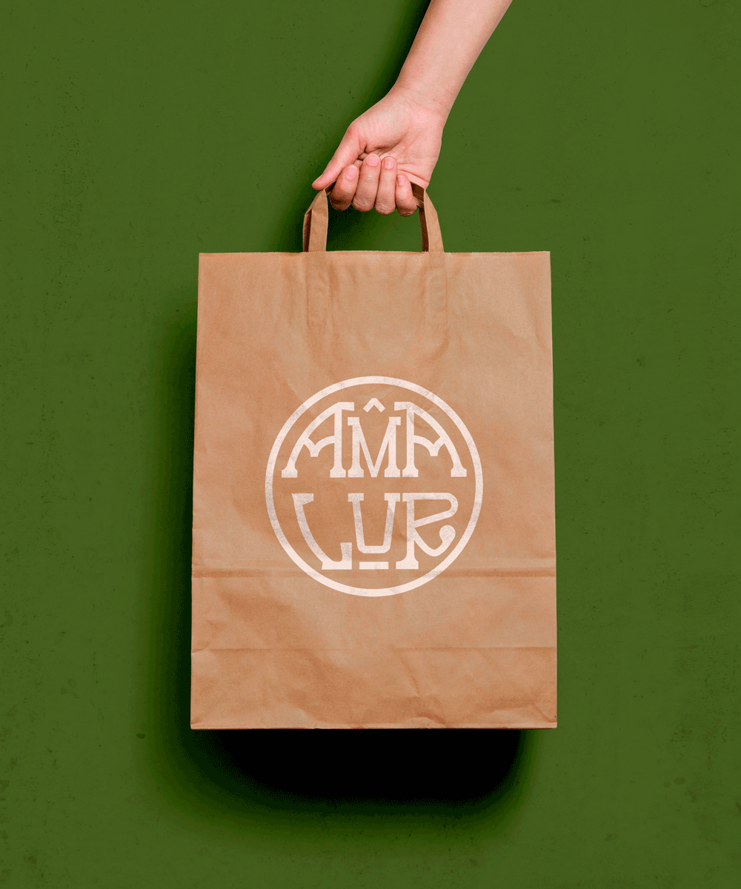

Amalur liburudenda
La identidad visual de esta librería nació del deseo de conectar profundamente con su entorno natural y
cultural. Inspirándome en las formas orgánicas y los colores de los paisajes de Arrigorriaga —verdes intensos,
tonos terrosos y texturas naturales— desarrollé una estética que transmite cercanía, calma y autenticidad.
Desde el inicio, trabajé en estrecha colaboración con los dueños, personas profundamente comprometidas con la
difusión de la cultura euskaldun. Su visión fue clave para crear un universo gráfico que no solo representa a la
librería como espacio de lectura, sino también como punto de encuentro cultural. El resultado es una identidad
coherente, sensible y enraizada tanto en la naturaleza como en la lengua y cultura vasca.
 
